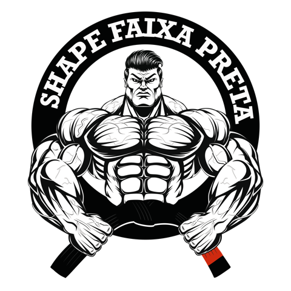
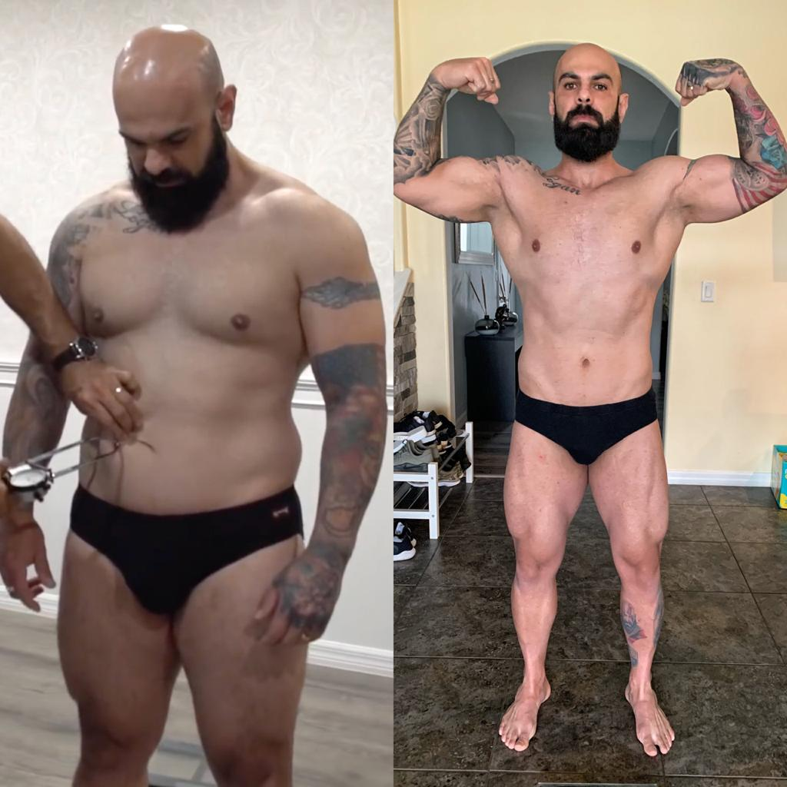

TENHA UM SHAPE FAIXA PRETA
O Programa Shape Faixa Preta foi inspirado no treinamento dos melhores lutadores do mundo.

TENHA UM SHAPE FAIXA PRETA
EM APENAS 8 SEMANAS
O Programa Shape Faixa Preta foi inspirado no treinamento dos melhores lutadores do mundo.
Você está preparado para este desafio?

Coach Rubens Gomes, perdeu 13,70 kg nas 8 semanas.
Coach Rubens Gomes, perdeu 13,70 kg nas 8 semanas.
Derreta a gordura fazendo o mesmo treinamento de lutadores faixa preta, e ainda aprenda golpes e finalizações que só atletas profissionais sabem.
Eu não sei qual é o seu nível, quando falamos de esportes de luta e musculação. Mas a verdade é que se você é um iniciante ou já pratica há muito tempo, você pode se beneficiar deste programa.